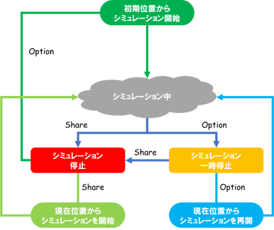

シミュレーションの操作¶
ここでは、ジョイスティックを使ったシミュレーションの開始・停止・一時停止・再開の仕方を説明します。
機能の有効化¶
以下の手順で機能を有効化します。
- メニューの「オプション」-「ジョイスティック」を開く。
- 「シミュレーションを開始（スタートボタン）」及び「プロジェクトを開く（ロゴボタン）」を選択する。
Note
本機能では、ゲームパッドの「Shareボタン」・「Optionボタン」・「Logoボタン」を使用します。（DualShock4の場合）
他の用途にこれらのボタンを使用する場合は、本機能を無効化してください。
シミュレーションの開始・停止・一時停止・再開¶
シミュレーションの開始・停止・一時停止・再開は次のように割り当てられています。
- 初期位置からシミュレーションを開始 ・・・ 停止状態のときにOptionボタンを１回押す
- 現在位置からシミュレーションを開始 ・・・ 停止状態のときにShareボタンを１回押す
- 停止 ・・・ 一時停止状態またはシミュレーション中にShareボタンを１回押す
- 一時停止 ・・・ シミュレーション中にOptionボタンを１回押す
- 現在位置からシミュレーションを再開 ・・・ 一時停止状態のときにOptionボタンを１回押す
本機能は下図のように状態が遷移します。
プロジェクトの読み込み¶
ロゴボタンを押すとプロジェクトを開くためのダイアログを呼び出します。